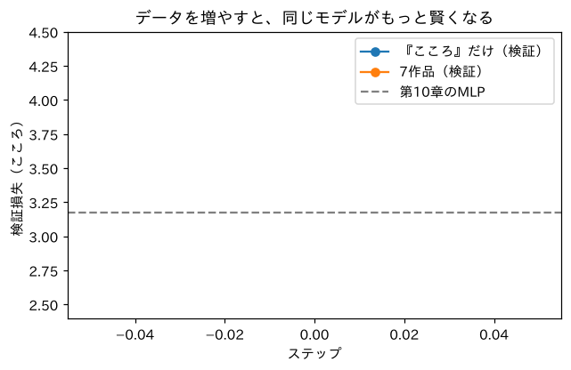
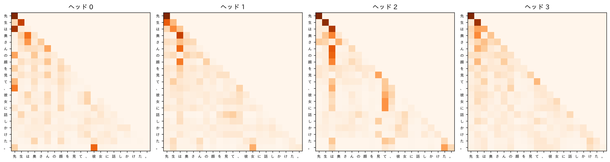

第3部 Transformerを組み立てる · 第13章
ミニGPTを鍛える：GPUで本格学習
漱石の小説7冊、100万字で、自分のGPTを育てる
おすすめは「ページを読みながら、コードを自分のノートブックに1セルずつ貼って実行」。完成ノートは困ったときの答え合わせ用です。
つくるもの
夏目漱石の7作品（約100万字）で学習した、あなただけの「漱石GPT」。トップページで動いているのと同じ設定です
ついでに身につく理論
- データを増やすと過学習が減る（データの大切さ）
- GPUへの転送と混合精度（float16・autocast）
- チェックポイント（学習途中の保存）
- 学習曲線で2つの実験を比べる
- マルチヘッドAttentionの役割分担
新しく使うPython
!wgetでファイルを取ってくる- 自作モジュールの
import torch.autocastとGradScaler- 辞書で設定をまとめて保存

ミナト
ついに来ましたね、GPT！ 第1章のQwenと比べると、どれくらいの大きさなんですか？

ボンゴ先生
パラメータは約175万個。Qwen2.5-0.5Bの約280分の1だ。読ませる文章も100万字と、Qwenの数兆トークンに比べれば、太平洋に対するバスタブくらい。でも、仕組みはまったく同じGPTだ。バスタブでも、泳ぎの練習はできる。
準備：GPUのランタイムにする
この章は GPU を使います。Colabのメニューで「ランタイム」→「ランタイムのタイプを変更」→「T4 GPU」を選んでから始めましょう。
import torch
device = "cuda" if torch.cuda.is_available() else "cpu"
print("使う装置：", device)
if device == "cuda":
print(torch.cuda.get_device_name(0))使う装置： cuda
Tesla T4cpu と出た人も、この章のコードはそのまま動きます。ただし学習に1時間以上かかるので、GPUが使えるタイミング（混んでいない夜や早朝など）を狙うか、付録AのKaggleを使うのがおすすめです。
第12章のGPTを取ってくる
第12章で一行ずつ書いたGPTのコードは、教科書のリポジトリに minigpt.py というファイルで置いてあります（中身は第12章のコードとまったく同じです）。wget というLinuxのコマンドでダウンロードして、import します。
!wget -q https://raw.githubusercontent.com/sakunokyumei/llm-research-textbook/main/code/minigpt.py
from minigpt import GPT
print("ミニGPTの設計図を読み込みました")ミニGPTの設計図を読み込みました漱石の7作品を読み込む
準備セルの load_soseki を使って、7作品をまとめて読み込みます。
import re, math, urllib.request
def load_soseki(file_id="773_ruby_5968"):
url = ("https://raw.githubusercontent.com/aozorahack/aozorabunko_text/master/"
f"cards/000148/files/{file_id}/{file_id}.txt")
text = urllib.request.urlopen(url).read().decode("cp932")
text = text.split("-------------------------------------------------------")[2]
text = text.split("底本：")[0]
text = re.sub(r"《.*?》", "", text)
text = re.sub(r"※?［＃.*?］", "", text)
text = text.replace("｜", "").replace("\r\n", "\n")
text = re.sub(r"\n{3,}", "\n\n", text)
return text.strip()
works = {
"こころ": "773_ruby_5968",
"坊っちゃん": "752_ruby_2438",
"吾輩は猫である": "789_ruby_5639",
"三四郎": "794_ruby_4237",
"草枕": "776_ruby_6020",
"夢十夜": "799_ruby_6024",
"それから": "56143_ruby_50824",
}
texts = {}
for title, file_id in works.items():
texts[title] = load_soseki(file_id)
print(f"{title}：{len(texts[title]):,} 文字")
all_text = "\n\n".join(texts.values())
chars = sorted(set(all_text))
V = len(chars)
stoi = {ch: i for i, ch in enumerate(chars)}
itos = {i: ch for ch, i in stoi.items()}
print(f"合計：{len(all_text):,} 文字、語彙：{V} 文字")こころ：162,467 文字
坊っちゃん：88,997 文字
吾輩は猫である：321,104 文字
三四郎：171,888 文字
草枕：85,547 文字
夢十夜：16,197 文字
それから：174,641 文字
合計：1,020,853 文字、語彙：3665 文字約102万字、語彙は3,665文字になりました。『こころ』だけのとき（2,061文字）より、使われる漢字が増えています。
次に、データを訓練用と検証用に分けます。これまでの章と成績を比べられるように、検証データは『こころ』の最後の10%のままにしておきます。ほかの作品は、それぞれ前90%を訓練に使います。
def encode(s):
return torch.tensor([stoi[c] for c in s], dtype=torch.long)
kokoro = texts["こころ"]
nk = int(len(kokoro) * 0.9)
kokoro_train = encode(kokoro[:nk])
kokoro_val = encode(kokoro[nk:]) # 記録表と同じ検証データ
others = [encode(t[:int(len(t) * 0.9)]) for title, t in texts.items() if title != "こころ"]
all_train = torch.cat([kokoro_train] + others)
print("『こころ』だけの訓練データ：", len(kokoro_train))
print("7作品の訓練データ： ", len(all_train))『こころ』だけの訓練データ： 146220
7作品の訓練データ： 918754学習の道具をそろえる
ミニバッチを作る関数、検証損失を測る関数、学習率スケジュール（第10章）を用意します。検証損失は、検証データを128文字ずつに区切って全部で測るので、毎回同じ値になります。
block_size = 128 # 何文字前まで見るか（窓の大きさ）
batch_size = 32 # 1回に何個の窓を学習するか
def get_batch(data, g):
ix = torch.randint(0, len(data) - block_size - 1, (batch_size,), generator=g)
x = torch.stack([data[i:i + block_size] for i in ix])
y = torch.stack([data[i + 1:i + block_size + 1] for i in ix])
return x.to(device), y.to(device)
@torch.no_grad()
def val_loss(model, data):
model.eval()
starts = range(0, len(data) - block_size - 1, block_size)
xs = torch.stack([data[i:i + block_size] for i in starts])
ys = torch.stack([data[i + 1:i + block_size + 1] for i in starts])
total = 0.0
for j in range(0, len(xs), 64):
_, loss = model(xs[j:j + 64].to(device), ys[j:j + 64].to(device))
total += loss.item() * len(xs[j:j + 64])
model.train()
return total / len(xs)
def lr_at(step, max_lr, total, warmup=200):
if step < warmup:
return max_lr * step / warmup
progress = (step - warmup) / (total - warmup)
return max_lr * 0.5 * (1 + math.cos(math.pi * progress)).to(device) で、データをGPUのメモリに送っています。GPUで計算するには、モデルとデータの両方がGPUにいる必要があります。
学習ループ（GPU対応版）
第10章の学習ループに、GPUで速く学習するための工夫（混合精度）を足したものです。
def train(train_data, max_iters, lr=1e-3, seed=0, log_every=500):
torch.manual_seed(seed)
g = torch.Generator().manual_seed(seed)
model = GPT(V, block_size=block_size, n_embd=128, n_head=4, n_layer=4, dropout=0.1).to(device)
opt = torch.optim.AdamW(model.parameters(), lr=lr, weight_decay=0.1)
scaler = torch.amp.GradScaler(device, enabled=(device == "cuda"))
history = []
for step in range(max_iters + 1):
for group in opt.param_groups:
group["lr"] = lr_at(step, lr, max_iters)
x, y = get_batch(train_data, g)
with torch.autocast(device_type=device, dtype=torch.float16, enabled=(device == "cuda")):
_, loss = model(x, y)
opt.zero_grad(set_to_none=True)
scaler.scale(loss).backward()
scaler.unscale_(opt)
torch.nn.utils.clip_grad_norm_(model.parameters(), 1.0)
scaler.step(opt)
scaler.update()
if step % log_every == 0:
vl = val_loss(model, kokoro_val)
history.append((step, loss.item(), vl))
print(f"ステップ {step:5d}：訓練 {loss.item():.3f} 検証（こころ）{vl:.3f}")
return model, history実験1：『こころ』だけで学習
まずは、これまでの章と同じ『こころ』だけで学習させます。これで、これまでのモデルとの公平な比較ができます。
model_k, hist_k = train(kokoro_train, max_iters=3000)ステップ 0：訓練 8.217 検証（こころ）8.207
ステップ 500：訓練 3.089 検証（こころ）3.218
ステップ 1000：訓練 2.622 検証（こころ）3.081
ステップ 1500：訓練 2.303 検証（こころ）3.075
ステップ 2000：訓練 2.233 検証（こころ）3.075
ステップ 2500：訓練 2.099 検証（こころ）3.092
ステップ 3000：訓練 2.091 検証（こころ）3.091実験2：7作品で学習
次に、同じモデル・同じ設定で、データだけを7作品（約6.3倍）に増やします。検証データは同じ『こころ』の最後の10%です。
model_all, hist_all = train(all_train, max_iters=5000)ステップ 0：訓練 8.220 検証（こころ）8.207
ステップ 500：訓練 3.724 検証（こころ）3.465
ステップ 1000：訓練 3.371 検証（こころ）3.107
ステップ 1500：訓練 3.158 検証（こころ）2.962
ステップ 2000：訓練 3.157 検証（こころ）2.850
ステップ 2500：訓練 3.119 検証（こころ）2.767
ステップ 3000：訓練 2.972 検証（こころ）2.710
ステップ 3500：訓練 3.007 検証（こころ）2.679
ステップ 4000：訓練 2.832 検証（こころ）2.653
ステップ 4500：訓練 2.873 検証（こころ）2.638
ステップ 5000：訓練 2.876 検証（こころ）2.635T4 GPUなら数分、CPUなら1時間ほどかかります。待っている間に、次の節を読んでおきましょう。
2つの実験を比べる
!pip install -q matplotlib-fontjaimport matplotlib.pyplot as plt
import matplotlib_fontja
plt.figure(figsize=(6.5, 3.8))
for hist, label in [(hist_k, "『こころ』だけ"), (hist_all, "7作品")]:
steps = [h[0] for h in hist]
plt.plot(steps, [h[2] for h in hist], marker="o", label=label + "（検証）")
plt.axhline(3.177, color="gray", linestyle="--", label="第10章のMLP")
plt.xlabel("ステップ"); plt.ylabel("検証損失（こころ）")
plt.ylim(2.4, 4.5)
plt.legend(); plt.title("データを増やすと、同じモデルがもっと賢くなる")
plt.show()
書かせてみる
7作品で学習したGPTに、いろいろな書き出しを与えてみましょう。
def write(model, start, n=150, temperature=0.8, seed=0):
torch.manual_seed(seed)
model.eval()
idx = encode(start)[None].to(device)
out = model.generate(idx, max_new_tokens=n, temperature=temperature)
return "".join(itos[i] for i in out[0].tolist())
for start in ["吾輩は", "先生は", " 山路を登りながら"]:
print(write(model_all, start))
print("-" * 40)吾輩はあらず御客さんが近頃のうちに、あって、車屋へ帰りになって橋石でも婆さん、あたりするつもりではないから、元の御飯が食うと大きな声だけで、あんな食うじゃないか」
「御茶を飲んでしたか」
「うん、どうかも知れない。え？」
「ええ、よし子さんに御用はありません。この原口さんのおさんが、どこかへ行ってやっぱい
----------------------------------------
先生はある。そうかして先生のうちに、あっちからそうなりみをしているで、先生は、あたりすこぶる熊本がたいって、性の目を凹ました」「私はあの時のあいです」と言った。奥さんはまた聞いたが、「帽子のうちでも亡くなったのかい」と、しばらくすると、「あなたはどうしてもお宅から原口さんの事がないんですか」と与次郎のほう
----------------------------------------
山路を登りながら、大きな木の中に近い寂として、あった、室の一方へ灯をとり抜いで、婆さんと車を向けた。
「ああなたは朝もう一つすが、何だか行くかい」と云った。代助は単簡に答えた。
「今度は何がたくって、大きくまで中梃なものだい」と、しばらくすると、額を手にした。
「そう。この原口さんの事がないんだ」
「わたしにしてい
----------------------------------------ボンゴ先生
どうだい、キミのGPTの「作品」は？ 第4章の「私は腎臓の運ばなた。」から、ずいぶん遠くまで来ただろう？ 文法はだいぶ整い、漱石らしい言い回しも出てくる。ただし、話の筋はまだ迷子だ。175万個のつまみと100万字では、このあたりが限界。ChatGPTが賢いのは、この何万倍ものつまみとデータがあるからなんだよ。
記録表
| モデル | 章 | パラメータ | 学習データ | 検証データの損失 |
|---|---|---|---|---|
| でたらめ | 5 | — | — | 7.631 |
| bigram（数える） | 5 | — | こころ | 3.581 |
| MLP（全部の治療） | 10 | 66万 | こころ | 3.177 |
| Attention 1ヘッド | 11 | 28万 | こころ | 3.31 |
| ミニGPT（4層・4ヘッド） | 13 | 約175万 | こころ | 3.075（1500〜2000ステップ） |
| ミニGPT（4層・4ヘッド） | 13 | 約175万 | 漱石7作品 | 2.635（5000ステップ） |
※ 第13章のモデルは語彙が3,665文字に増えているので、厳密には少しだけ不利な条件での比較です。数値は教科書の検証環境（CPU）での実測値です。GPUで実行したあなたの数値も、ぜひ表に書き足してください。
第10章のMLP（3.177）から、『こころ』だけのGPTで 3.075、7作品のGPTで 2.635。パープレキシティにすると、24択から約14択へ。数えるbigram（36択）から比べると、迷いが半分以下になりました。
大事なモデルを保存する
学習したモデルは、Googleドライブに保存しておきましょう（第10章と同じ手順です）。今回は、モデルの中身だけでなく、語彙と設定もいっしょに保存します。第24章で、このファイルからブラウザで動くモデルを作ります。
from google.colab import drive
drive.mount("/content/drive")import os
save_dir = "/content/drive/MyDrive/tsukuru-llm"
os.makedirs(save_dir, exist_ok=True)
checkpoint = {
"model": model_all.state_dict(),
"chars": chars,
"config": {"vocab_size": V, "block_size": block_size, "n_embd": 128, "n_head": 4, "n_layer": 4, "dropout": 0.1},
}
torch.save(checkpoint, f"{save_dir}/soseki_gpt.pt")
print("保存しました：", round(os.path.getsize(f"{save_dir}/soseki_gpt.pt") / 1e6, 1), "MB")保存しました： 8.1 MBヘッドたちの役割分担を見る
最後に、学習したGPTの4つのヘッドが、それぞれどこに注目しているかを見てみましょう（第11章の1ヘッドとの違いに注目）。
sample = "先生は奥さんの顔を見て、彼女に話しかけた。"
idx = encode(sample)[None].to(device)
model_all.eval()
with torch.no_grad():
model_all(idx)
fig, axes = plt.subplots(1, 4, figsize=(16, 4.4))
heads = model_all.blocks[-1].attn.heads # 最後の層の4つのヘッド
for h, ax in enumerate(axes):
ax.imshow(heads[h].wei[0].float().cpu(), cmap="Oranges")
ax.set_xticks(range(len(sample))); ax.set_xticklabels(list(sample), fontsize=7)
ax.set_yticks(range(len(sample))); ax.set_yticklabels(list(sample), fontsize=7)
ax.set_title(f"ヘッド {h}")
plt.tight_layout()
plt.show()
ヘッドによって、注目の仕方が違っているはずです。直前の文字ばかり見る「近視のヘッド」、文の頭を見る「振り返りヘッド」……。誰も役割を割り振っていないのに、学習の中で自然に分業が生まれています。
クイズ 1：データとモデル
同じモデルなのに、7作品で学習したほうが『こころ』の検証損失が良くなったのはなぜ？
答えを見る（まず自分で考えてから！）
データが多いと、同じ文章を何度も見て丸暗記する（過学習する）ことが減り、漱石の文体に共通する特徴をいろいろな文章から学べるからです。最も強力な過学習対策は、データを増やすことです。
クイズ 2：混合精度
GradScaler は何のために使う？
答えを見る（まず自分で考えてから！）
float16では非常に小さな数が0になってしまう（アンダーフロー）ので、勾配が消えないように、損失を一時的に大きく拡大してから逆伝播し、更新の前に元の大きさに戻すためです。
できたらチェック
ボンゴ先生
第3部、完走おめでとう！ キミはもう「GPTをゼロから作って学習させたことがある人」だ。世界中を探しても、そう多くはない。次の第4部では、自作GPTを「本物」に近づける。まずはトークナイザー。いまは1文字＝1トークンだけど、本物のLLMはBPEを使っていた（第2章）。それを自分で作るところからだ。
押すと目次にチェックが付きます（この端末のブラウザにだけ保存）。